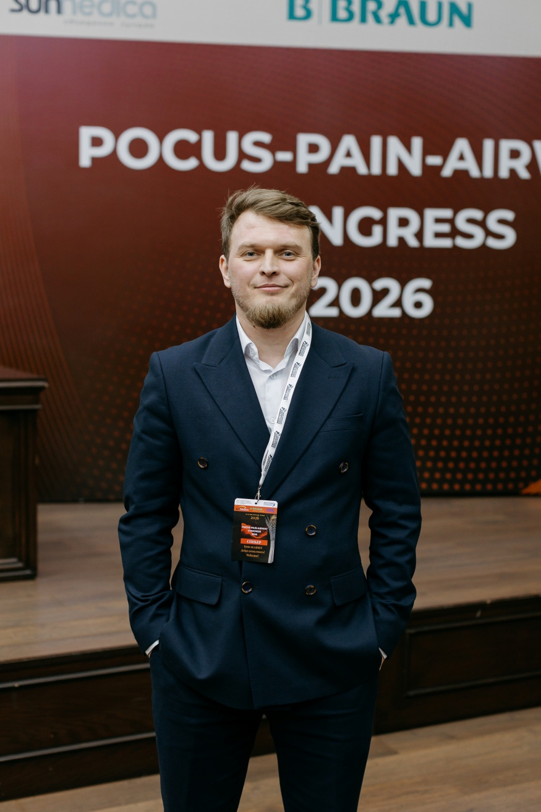
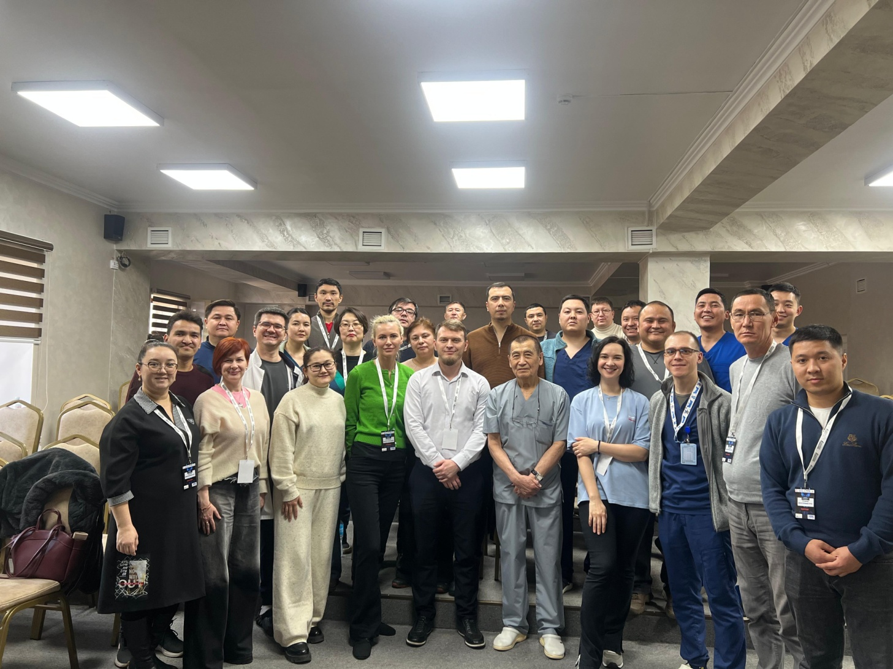
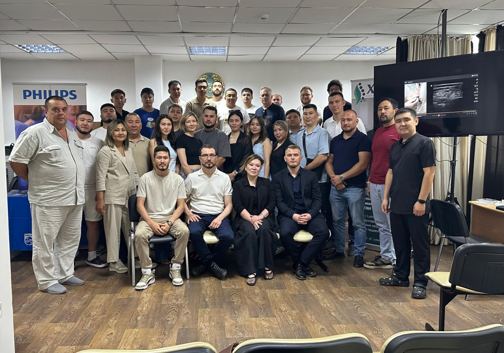
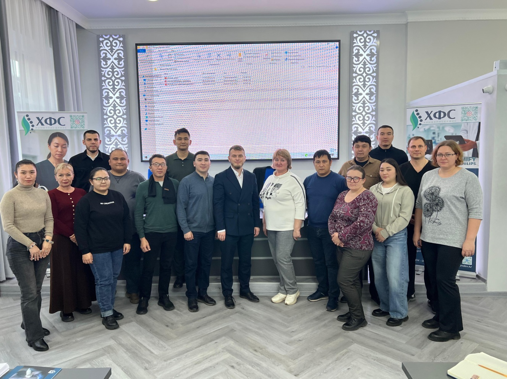
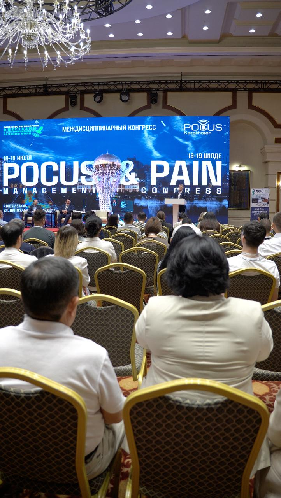
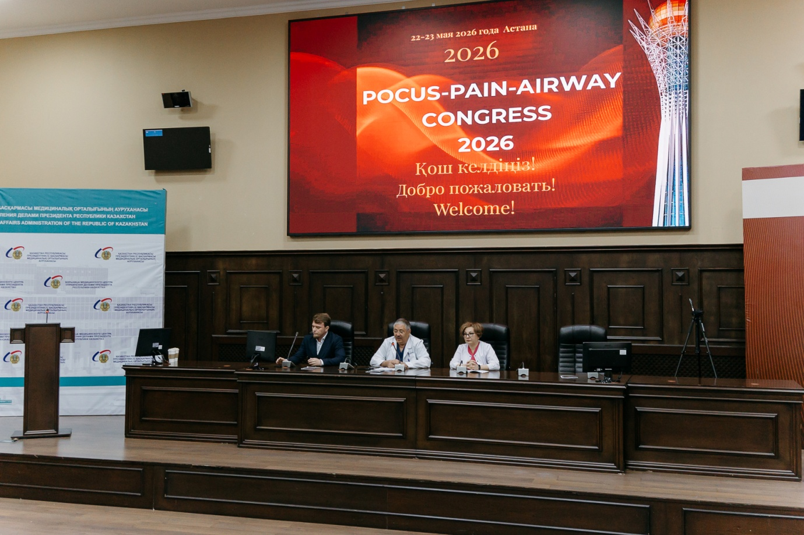

Intensive format
Focused one- and two-day courses combining concise lectures with extensive practical work.
An independent educational platform advancing bedside ultrasound in anaesthesiology, intensive care, emergency and perioperative medicine across Kazakhstan.

POCUS Kazakhstan develops safe ultrasound-guided procedures and bedside diagnostic skills. Since 2024, the school has delivered international courses in different regions of the country, working with experts from Kazakhstan, Europe and Asia. Training is built around hands-on practice, modern ultrasound systems, phantoms, simulation and real clinical cases.
Founder and Director of POCUS Kazakhstan · Chairman of the Society of Regional Anesthesia and Interventional Pain Management
Head of the Pain Treatment Center at Pavlodar Regional Hospital named after G. Sultanov, consultant anaesthesiologist and intensive care physician.
His professional interests include point-of-care ultrasound, ultrasound-guided vascular access and regional anaesthesia, interventional pain management, perioperative and critical care ultrasound, paediatric anaesthesia and procedural safety. Since 2024, he has organised international courses and workshops with experts from Europe and Asia.
The curriculum combines diagnostic POCUS with procedural ultrasound for acute, perioperative and critical care practice.
Focused one- and two-day courses combining concise lectures with extensive practical work.
Hands-on stations, live demonstrations, simulation and discussion of clinical cases.
Ultrasound systems, phantoms and simulation models for safe skills development.



Together with the Society of Regional Anesthesia and Interventional Pain Management, the school develops national educational platforms for multidisciplinary exchange.

Kazakhstan's first large multidisciplinary event integrating POCUS, regional anaesthesia and pain medicine.

An international congress with lectures, simulation, ultrasound workshops and difficult-airway masterclasses.